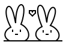

HELLO, WORLD.
I’m Jennifer.

A little about me goes here — a few words about who I am, what I’m into, and whatever else feels like me.
A little space for life outside of classes and code.
- For fun
- To be added.
- To unwind
- To be added.
- On weekends
- To be added.
- On repeat
- Music: to be added.
- On my shelf
- Books: to be added.
- On screen
- Movies, shows, or games: to be added.
- Studying
- Computer science, mathematics & AI at Purdue.
- Building
- This little home on the web.
- Looking forward to
- To be added.
- Natural language processing
- Computer vision
- Machine learning & data science
- Tools for exploring data
Always a work in progress.
Thanks for hopping by.